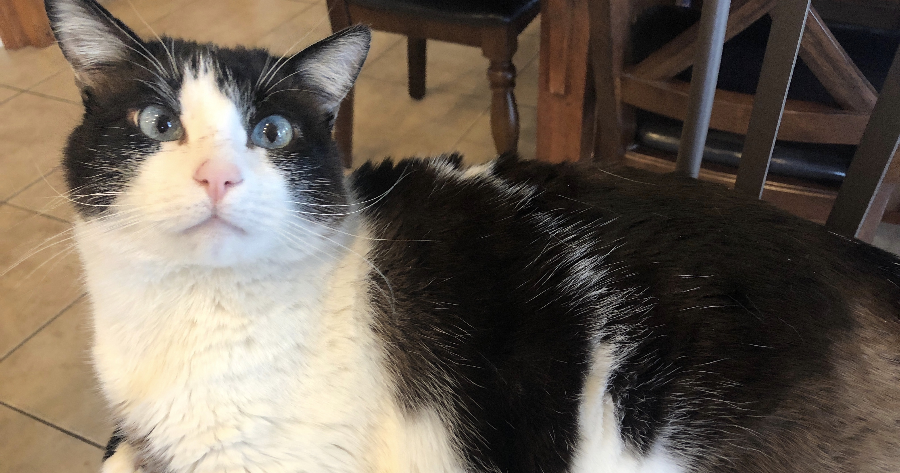

The cat, or Felis catus, is a small carnivorous animal. They are a
common household pet with over 60 breeds to choose from. Some prefer
dogs to cats, but others would strongly disagree. Cats have many
proven benefits that dogs simply do not have, such as:
The list of the benefits of cats is unending! Benefits include, but are not limited to:
lowering risk of heart disease improving your datability (women find men who like cats attractive and sensitive)
Their purring helps to heal aching muscles, and they make you more intelligent
They are low maintenance (they bathe themselves, litter box is easy to clean, they sleep anywhere, etc.)
They help you through your difficult times
Best of all: You do NOT have to walk them.
I was the proud owner of a beloved feline. His name was Winston and he was a great
friend to me and my family. He enjoyed afternoon naps in the sunlight streaming through
the blinds in my bedroom, eating my string cheese, and moving to the other couch whenever
I would sit next to him. He could be moody and somewhat manipulative, but when it came down
to it, he was my best friend. .

Rest in peace Winston.